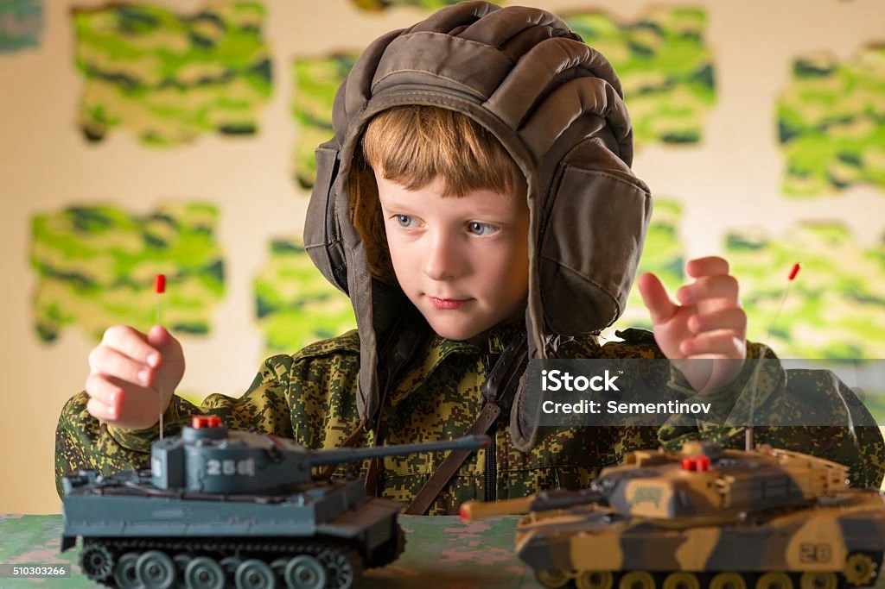

Personalised Tank Toy
Toy Tank Models
Tank toys captivate children with their detailed designs and the promise of exciting adventures. Whether they are reenacting historical battles or creating their own missions, these toys spark imagination and creativity.
Cognitive Benefits of Playing with Tank Toys
- Problem-Solving
- Critical Thinking
- Memory Retention
Create custom designs with our Toybox 3D Printer.
Fun Roleplaying Adventures
Tank toys are ideal for engaging children in fun and exciting roleplaying adventures. These activities not only entertain but also teach valuable lessons.
Tank Toys for Kids: Fun, Adventure, and Brain-Boosting Play
Introduction
Tank toys are a fantastic way to combine fun, adventure, and learning for children. These miniature replicas of military tanks offer endless possibilities for imaginative play and roleplaying, while also stimulating various brain activities. In this article, we will explore the benefits of tank toys, highlighting how they can provide both entertainment and educational experiences for kids.
The Appeal of Tank Toys
Tank toys captivate children with their detailed designs and the promise of exciting adventures. Whether they are reenacting historical battles or creating their own missions, these toys spark imagination and creativity.
Features:
- Realistic Design: Many tank toys are designed to look like real military tanks, complete with intricate details.
- Interactive Play: Some tank toys come with moving parts, sound effects, and lights, enhancing the play experience.
- Durability: Made from sturdy materials, tank toys can withstand rough play.
Cognitive Benefits of Playing with Tank Toys
Playing with tank toys offers numerous cognitive benefits that contribute to a child's development.
Benefits:
- Problem-Solving: Creating scenarios and missions encourages problem-solving skills.
- Critical Thinking: Deciding strategies and tactics fosters critical thinking.
- Memory: Remembering different battles and missions improves memory retention.
The Power of Imagination
Imaginative play is crucial for a child's growth. Tank toys provide a perfect tool for children to unleash their creativity and explore new ideas.
Activities:
- Storytelling: Kids can invent stories and adventures, developing their narrative skills.
- Character Creation: Designing characters and roles enhances creativity and self-expression.
- World-Building: Imagining different settings and worlds fosters spatial awareness and creativity.
Fun Roleplaying Adventures
Tank toys are ideal for engaging children in fun and exciting roleplaying adventures. These activities not only entertain but also teach valuable lessons.
Adventure Ideas:
- Historical Battles: Reenact famous battles from history, teaching kids about historical events and figures.
- Mission Impossible: Create a storyline where kids must complete a challenging mission, teaching strategy and teamwork.
- Exploration: Pretend to explore unknown territories with the tank, fostering curiosity and a sense of adventure.
Brain Activities with Tank Toys
Playing with tank toys stimulates various brain activities, contributing to cognitive development.
Activities:
- Strategic Thinking: Planning and executing missions enhances strategic thinking.
- Spatial Awareness: Understanding how to navigate imaginary battlefields improves spatial awareness.
- Language Skills: Storytelling and roleplaying boost vocabulary and language skills.
The Importance of Play in Child Development
Play is a vital part of a child's development. It helps them learn new skills, express themselves, and understand the world around them. Tank toys combine play with learning, making education a fun and engaging process.
Benefits of Play:
- Cognitive Development: Enhances problem-solving skills and critical thinking.
- Social Skills: Roleplaying with tank toys can be a social activity, teaching kids to share and collaborate.
- Emotional Growth: Creative play allows children to express their emotions and build self-confidence.
Tips for Parents: Maximizing the Benefits of Tank Toys
Parents can enhance the learning experience by incorporating tank toys into various activities. Here are some tips to get started:
- Interactive Play: Spend time playing with the tank toys alongside your child, encouraging them to explore different adventures.
- Themed Learning: Use tank toys to create themed lessons, such as a day dedicated to learning about military history or strategy.
- Storytime: Combine tank toys with storytelling. For example, create a story involving a tank's mission.
- Craft Projects: Use tank toys for non-roleplaying activities, such as tracing their shapes onto paper for coloring or using them as stencils for painting.
- Celebrate Achievements: Praise your child's efforts and creations, whether it's a new mission or a creative story involving the tank.
Conclusion
Tank toys are a fantastic addition to any child's playtime. They offer a unique blend of fun and educational benefits, helping children learn new skills while having a great time. With their realistic designs and endless possibilities for imaginative play, tank toys are sure to be a hit with kids and parents alike. So, the next time you're looking for a fun and brain-boosting toy, consider tank toys and watch your child's imagination and cognitive abilities soar!